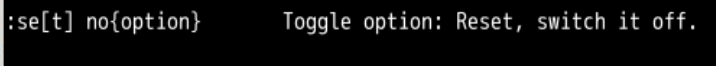
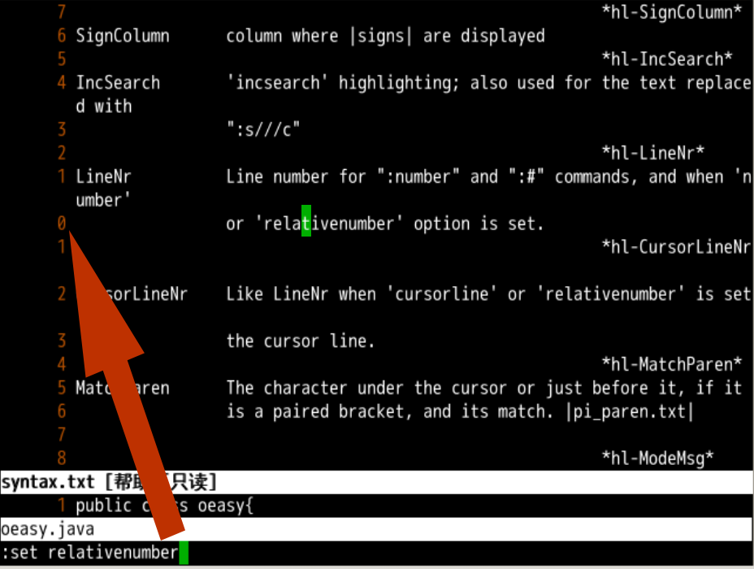
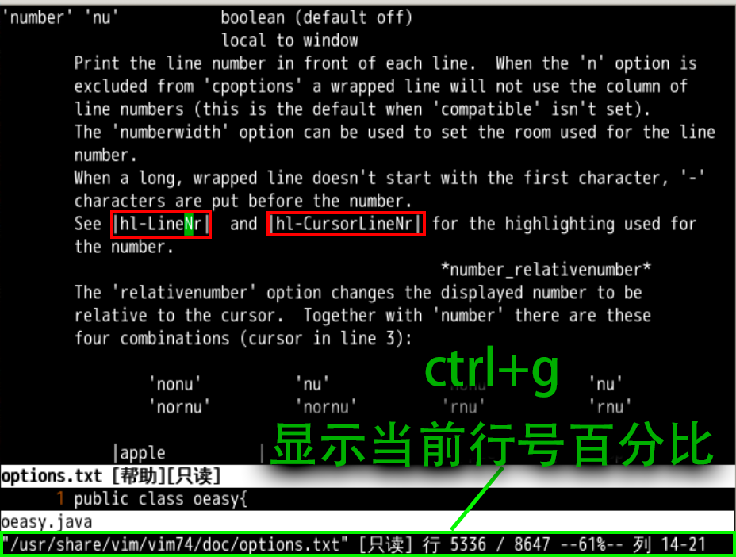

跳到某行
回忆上节课内容🤔
- 上下行
- 向
下是 j👇 - 向
上是 k👆
- 向
- 上下行首
- 向
下到行首非空字符 + - 向
上到行首非空字符 - - 这些
motion都可以加上[count]来翻倍
- 向
- 首尾行
- 首行是 g g
- 尾行是 G
- g g = G 是全部自动缩进
- G 好像还有其他用法?
- 什么用法呢?
- 先用
无配置的vi打开oeasy.java
直接跳转到某行

- 直接跳到某行Goto Line
- 2 G 跳到第
2行 - 3G 跳到第
3行 - 4G 跳到第
4行 - gg 跳到第
1行 - G 跳到最后一行
- 2 G 跳到第
- 这个真的很方便
- 尤其编译报错某行出问题的时候
- 直接就
Goto过去了
- 如果行数多了
- 怎么才能使到我要去第几行呢？
- 这就需要显示行号
显示行号
:set number是显示行号:set是命令，可以设置各种属性number是:set的参数option- 是一个负责显示行号的开关属性
- 我们可以通过
:h :set来查看各种属性- 这些帮助手册都在
options.txt中
- 这些帮助手册都在

- 我们不但可以打开
number开关:set number打开number开关- 显示行号
- 也可以关闭
number开关number前面加上no代表关闭该开关:set nonumber关闭number，不显示行号
- 简写
:se[t] nu[mber]可简写为:se nu:se[t] nonu[mber]可简写为se nonu
显示相对行号
- 我们不但可以显示绝对的行号
- 也可以显示相对的行号
- 也在
options.txt这文件里 - 这个开关叫做
relativenumber- 相对行号
:set relativenumber

- 可以看到当前光标位置对应
0行- 向上👆的行号是从当前行行计算的
- 向下👇的行号也是从当前行计算的
- 这样上下运动就会更精确一点
4j就能知道光标落在下面标4的那行5k就能知道光标落在上面标5的那行
- 如果我同时设置
se nu会如何呢？- 当前行显示绝对行号，上下部分显示相对行号
- 相对行号简写
set relativenumber简写为se rnuset norelativenumber简写为se nornu
行命令模式跳转
- 我们还可以使用行命令的模式跳转
:30跳到第30行:40跳到第40行:50跳到第50行:6000000跳到结尾，如果整篇文字没有6000000行的话
- 如何知道当前文件有多少行呢？
- 还记得
:f[ile]吗？ - 快捷键是 ctrl g
- 还记得
显示位置

- 我们可以通过ctrl g看到：
- 文件名
- 当前行号
- 总行数
- 当前位置百分比
- 当前列位置
总结
- 跳转到第200行
200G
- 设置行号选项
- 显示行号
:se nu - 显示相对行号
:se rnu
- 显示行号
- 如何用命令行跳转
:100 - 但是我如何有的时候记不住到底跳到多少行
- 能否做个标记留个记号呢？
- 下次再说 👋